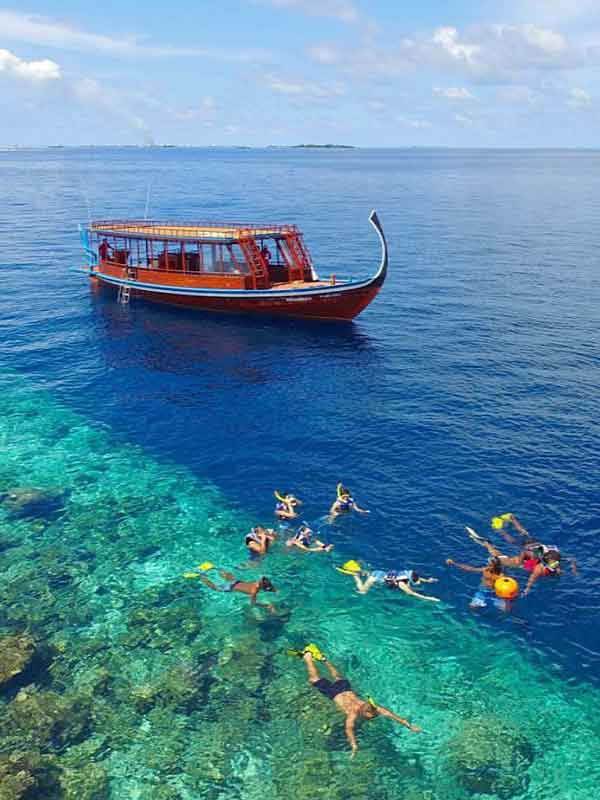

Six dive sites worth the tank fill
Logged and rated by the team — depth ranges, difficulty, and what you're actually likely to see down there.

You don't need a tank to start
Most of this page assumes a certification card, but plenty of the same reefs are shallow enough to snorkel straight off the side of a dhoni. If you're not certified yet, this is where to start — the house reefs at Coral Garden and Turtle Reef are both easy, current-free snorkels before you ever consider a tank.
Manta Point
Baa Atoll · A cleaning station that draws reef mantas most mornings, June through November.
Coral Garden
Ari Atoll · Shallow, current-free and thick with reef fish — a good first dive of the trip.
Shark Channel
Vaavu Atoll · A swift channel drift where grey reef sharks patrol the drop-off.
Turtle Reef
Lhaviyani Atoll · Resident green turtles feeding on the shallow reef flat, most dives guaranteed.
Kandholhu Wreck
North Malé Atoll · A deliberately scuttled cargo ship, now a full artificial reef.
Night Lagoon Dive
Raa Atoll · Bioluminescent plankton and nocturnal reef life inside a sheltered lagoon.
Certification & conditions
Most sites here assume Open Water certification and comfort with mild current; the channel and wreck dives are Advanced Open Water or higher. Visibility and current shift with the monsoon — ask your dive centre for that week's actual numbers, not the seasonal average.